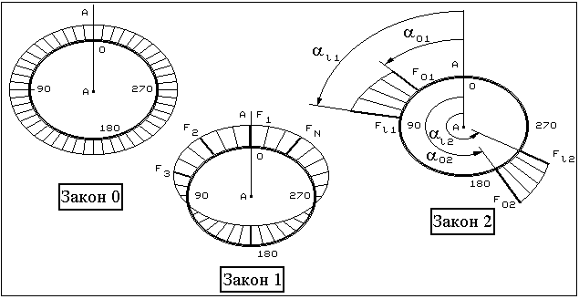

В конструкции необходимо выбрать сечение A-A, являющееся началом отсчета координаты α2 (рис. 1).

Рис. 1
Рассматриваются следующие законы распределения тепловых и силовых нагрузок по окружности.
Осесимметричное нагружение (рис. 1). В этом случае F(α2) = 1.
Задание функции F(α2) в равномерно отстоящих точках по окружной координате α2 (рис. 1). В этом случае окружность разбивается на N равных участков и в N узлах окружности с координатами
Y(i) = (360/N)×i
задаются значения функций Fi(i = 0,1,...,N-1).
Задание функции F(α2) в виде N дискретно расположенных участков с линейным распределением нагрузок на каждом участке (рис. 1). В этом случае описание закона распределения для 1-го участка задается 4-мя числами:
α01,F01, αl1,Fl1;
для 2-го участка - 4-мя числами:
α02,F02, αl2,Fl2
и т.д.
Функция F(α2) = Fnсоs(n×α2).
Функция F(α2) = Fnsin(n×α2).
Задание функции F(α2) в виде N сосредоточенных сил. В этом случае описание нагрузки представляет собой последовательность из N пар чисел: α21,F1, ..., α2N, FN.
Примечания